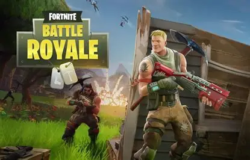
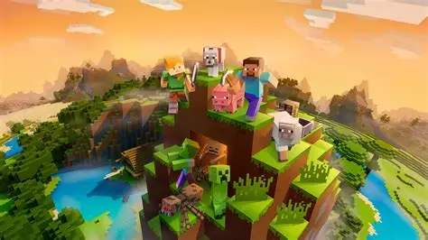
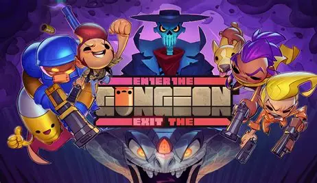
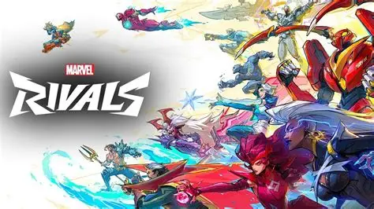
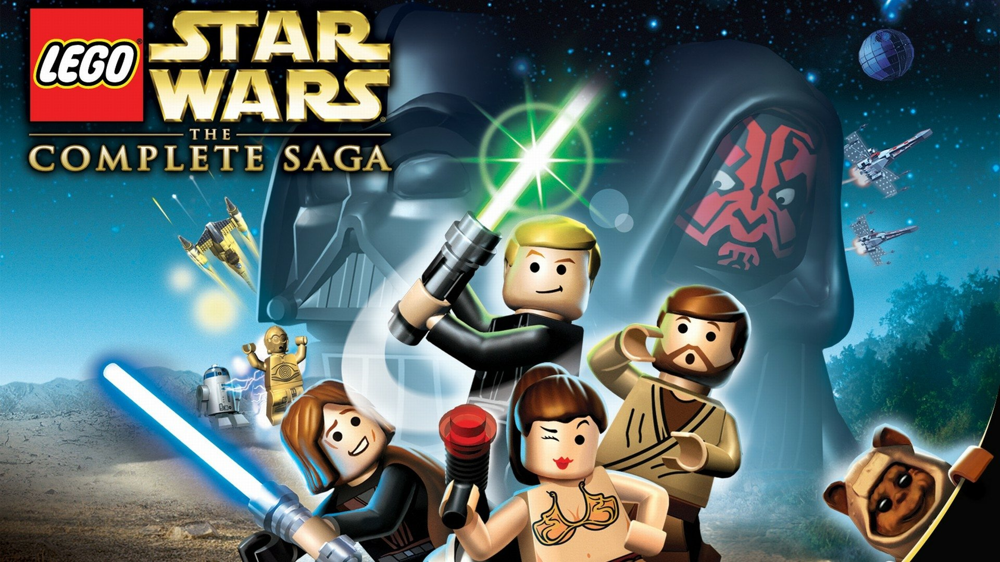
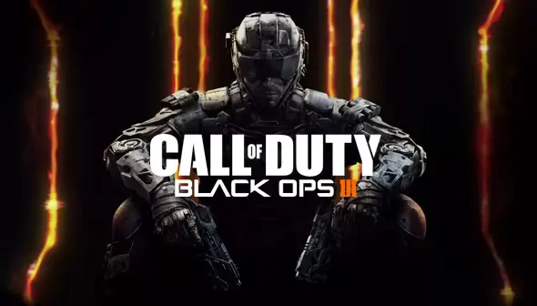
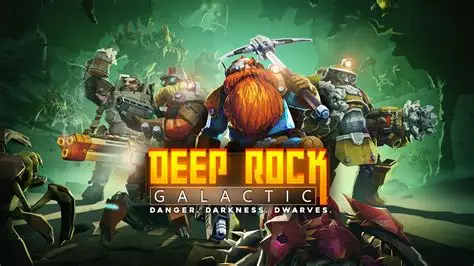
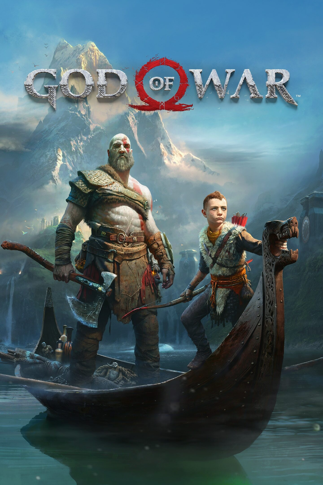
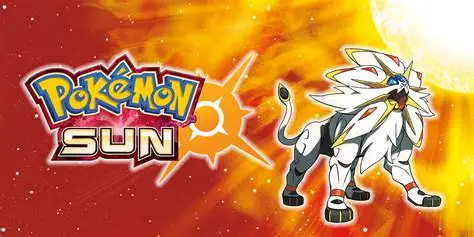
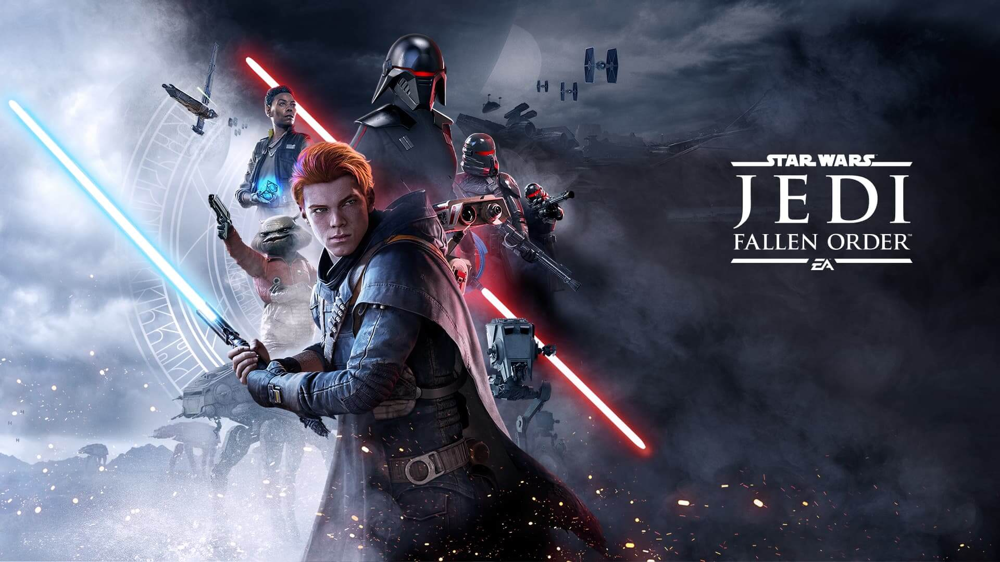

#10 Fortnite

Suprisingly this is not a joke or satire. I'm gen z, and pretty much grew up loving this game. It's an easy game to hop onto and mess around with friendes to this day.
#9 Minecraft

I can't really play this one anymore, because I'll get bored in about 3 days, but where would I be without Minecraft. I have a deep appretiation for the game, and spent countless hours on it.
#8 Enter the Gungeon

I have sunk countless hours into this game. I was addicted for a while. The easter eggs are fun.
#7 Marvel Rivals

Played this game on launch, and loved it. Got really invested in ranked, then finals hit and couldn't play for two weeks. When I came back I was bad at the game again and stopped playing.
#6 Lego Star Wars

Played it a lot as a kid. Needed a filler spot for #6
#5 Call of Duty Black ops 3

Was stuck between black ops 2 and black ops 3, but ultimately black ops 3 is the game I always come back to. Great to play with friends and I love the zombies gamemode.
#4 Deep Rock Galactic

DRG is the game that got me through COVID. Hoping on this game with my three best friends is one of the best gaming experienes I have ever had. We probably played it every single night.
#3 God of War

The most recent story game that I have played. A great mix of challenging combat and puzzles. Fun game.
#2 Pokemon Sun and Moon

My first Pokemon game as a kid. I did everything there was to do in this game. From completing the story, getting 100% of the pokedex, and shiny hunting all my favorite pokemon.
#1 Jedi Fallen Order/Survivor

Yeah, I couldn't pick one or the other for my number one spot. They are both fantastic games. The story's are amazing, the lightsaber and force combat it very engaging, and exploring every corner of the game is a lot of fun. I got all the trophies on Jedi Fallen Order, that how much I enjoyed it. One of the few games that made me cry when I completed it. One of the best modern Star Wars Storys is a video game, and it makes me sad that not everyone will be able to experiene it. The main character is also named Cal, and I felt like the other characters where talking to me when they said his name lol.